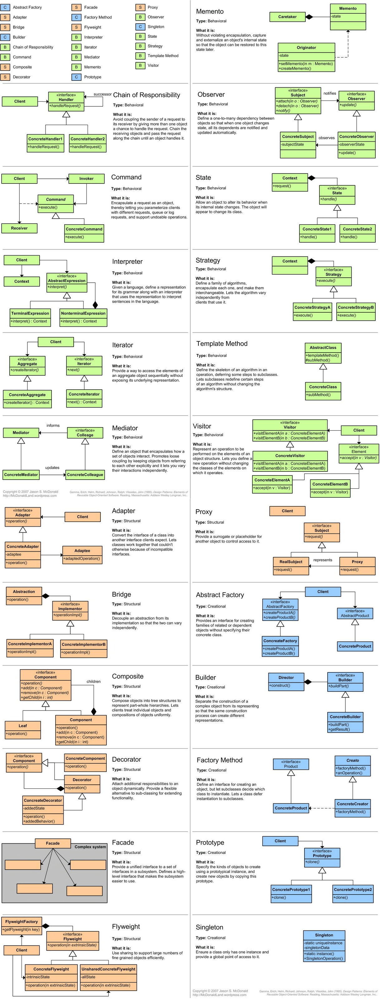

『 读书笔记 』 Web 高性能开发参考资料
2015-05-02
0. 写在前面
工作一年多了，发现自己还是没什么长进。学技术这件事儿，还是得靠自己啊，所以我准备以专题的形式来提升自己的能力。这篇我总结了一些搜集的比较好的讲web高性能开发的文章和书籍，都是我自己看过的。以后再也不怕别人问到高性能web的经验和知识了，用老话说，就算没吃过猪肉也应该见过猪跑吧，咱就算没经历过高性能web开发实践，也至少了解一些这方面的知识吧。哈哈。
1. 模式相关
-
设计模式概览图
以图形的形式简单阐述了各种模式的概念，图画得不错，表述也清晰，可以有空翻开看看；  -
软件架构模式
是作者对这本书的Software Architecture Patterns 笔记和总结，写得很详细，可以时常参考，提升架构方面的基础和概念，同时，有时间也推荐读读原书，原书PDF链接在后面。
这里面提的架构有：分层架构，事件驱动架构，微内核架构，微服务架构，基于空间的架构。 -
微服务架构快速指南
不常听说为服务架构，简单的理解，就是介于monolithic和SOA模式之间的一个架构模式，比monolithic灵活，轻便，比SOA有更强的组织性。不必过于在乎三者之间的差别，根据实际情况选择合适自己项目的架构模式。 -
微服务架构的设计模式
是微服务架构快速指南的细节篇，里面介绍了一些常用的微服务架构的设计模式，在设计项目架构的时候，如果没有什么思路，这篇文章是很好的参考资料。简单的说，里面提到了常用的微服务设计模式：聚合器，代理，链式服务，分支，数据共享，异步消息。 - 大型网站系统架构的演化
- 大型网站的灵魂——性能
非常好的介绍大型网站架构变化的文章，这个网站有一个专门讲大型网站性能的文章系列，都非常值得学习。我把这个系列也列在下面了，写得很细，算是最值得参考和学习的文章了。- 关于大型网站技术演进的思考（一）–存储的瓶颈（1）
- 关于大型网站技术演进的思考（二）–存储的瓶颈（2）
- 关于大型网站技术演进的思考（三）–存储的瓶颈（3）
- 关于大型网站技术演进的思考（四）–存储的瓶颈（4）
- 关于大型网站技术演进的思考（五）–存储的瓶颈（5）
- 关于大型网站技术演进的思考（六）–存储的瓶颈（6）
- 关于大型网站技术演进的思考（七）–存储的瓶颈（7）
- 关于大型网站技术演进的思考（八）–存储的瓶颈终篇（8）
- 关于大型网站技术演进的思考（九）–网站静态化处理–总述（1）
- 关于大型网站技术演进的思考（十）–网站静态化处理—动静整合方案（2）
- 关于大型网站技术演进的思考（十一）–网站静态化处理—动静分离策略（3）
- 关于大型网站技术演进的思考（十二）–网站静态化处理—缓存（4）
- 关于大型网站技术演进的思考（十三）–网站静态化处理—CSI（5）
- 关于大型网站技术演进的思考（十四）–网站静态化处理—前后端分离—上（6）
- 关于大型网站技术演进的思考（十五）–网站静态化处理—前后端分离—中（7）
- 关于大型网站技术演进的思考（十六）–网站静态化处理—前后端分离—下（8）
- 关于大型网站技术演进的思考（十七）–网站静态化处理—满足静态化的前后端分离（9）
- 关于大型网站技术演进的思考（十八）–网站静态化处理—反向代理（10）
- 关于大型网站技术演进的思考（十九）–网站静态化处理—web前端优化—上（11）
- 关于大型网站技术演进的思考（二十）–网站静态化处理—web前端优化—中（12）
- 关于大型网站技术演进的思考（二十一）–网站静态化处理—web前端优化—下【终篇】（13）
2. 高性能网站相关
-
如何构建高扩展性网站
是一本小册子《高扩展性网站的50条原则》的读书笔记。这本书不错，值得一看，在设计、改进项目架构时都可以拿来翻翻，不错的小册子。 -
最佳免费的网站性能测试工具
这篇博文是我认为最有实际意义的一篇博文之一了，里面提到了12个免费的网站性能测试工具，比如大名鼎鼎的google pagespeed insights。我的建议是，在进行任何优化前，都先简单地用这些工具在线测试一下。不要盲目地进行后台的优化，更不要盲目的去设计一些高端的算法来做所谓的加速。比如说，一个请求后台返回的时间控制在100ms之内，但发起这个请求的js脚本被写在一个很大的js文件里面，导致下载这个js文件需要数百毫秒，那此时应该怎么优化呢？别跟我说你会让你的后台工程师去找一什么高大上的算法来解决这个问题。 -
web高性能开发系列随笔
算是一篇比较简单，但是完善的web性能优化博客了，里面涉及到前后端的各种优化方法，虽然我只是后台开发，但看这种文章能够让开发人员从全局的视角去设计和优化你的web系统。就跟上一篇 最佳免费的网站性能测试工具 文章一样，在优化前，先全局、完整地了解你的web系统，再来说具体怎么优化吧。如果你在优化前，不知道怎么对web系统“全局”地了解，这篇博客可以入门用。
3. 参考书籍
扫一扫